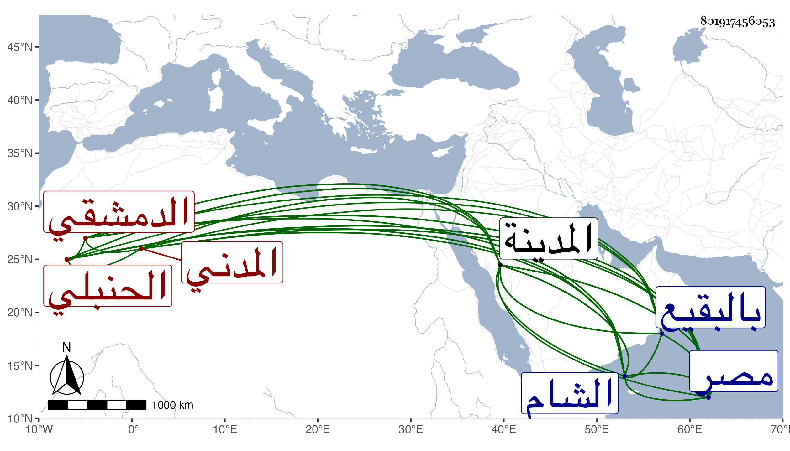

0902Sakhawi.DawLamic.ITO20230111-ara1.EIS1600.801917456053
Biography ID: 801917456053
50
أبو بكر بن أحمد بن عبد الرحمن بن عبد الله الفخر الدمشقي ثم المدني الحنبلي ويعرف بالشامي . سمع على الصلاح بن أبي عمر جزء الهيثم بن كليب ومن ابن أميلة الترمذي بفوت ومن العز بن جماعة القاضي والفخر عثمان النويري النسائي ذكره شيخنا في أنبائه وقال كان خيرا دينا اشتغل كثيرا وتيقظ وسمع من بعض أصحاب الفخر وناب في الحكم وأكثر التوجه إلى الشام ومصر . مات في المحرم سنة عشر عن ستين سنة وقد أسرع إليه الشيب جدا . وذكره الفاسي في ذيله فقال وكانت له نباهة في الفقه تفقه في المدينة بالزين المراغي وأخذ عن غيره بمصر والشام وناب في الحكم بالمدينة عن الزين عبد الرحمن الفارسكوري أشهرا قليلة وكان فيه خير ودين وأدب ومذاكرة حسنة . مات بالمدينة ودفن بالبقيع .
